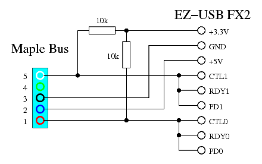
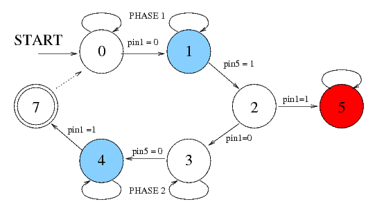

This page describes an adaptor from Maple Bus to USB (meaning that
you can connect your Maple Bus devices to an USB host, not the other
way around) built using only an EZ-USB2 module from Braintechnology,
and two resistors. The current software allows Dreamcast controllers,
keyboards, and mice to be used as normal HID devices.
This page describes an adaptor from Maple Bus to USB (meaning that
you can connect your Maple Bus devices to an USB host, not the other
way around) built using only an EZ-USB2 module from Braintechnology,
and two resistors. The current software allows Dreamcast controllers,
keyboards, and mice to be used as normal HID devices.
To build this adaptor, you need the following:
- One USB High Speed Interface module from Braintechnology
- Two 10k resistors
- One Maple Bus connector (female)
At this point someone might wonder why I've used a USB2 chip, when a controller hardly needs high speed mode. Well, that's because the FX2 has something that its USB1 cousins does not: GPIF. Use of the GPIF is essential in being able to recive Maple data reliably at full speed (see below for details), and therefore it has to be the FX2.
Connect the parts according to the following schematic, and you're done! 
Well, the next thing needed is some software to put into the FX2. The following software allows you to connect a Dreamcast controller, keyboard, or mouse, and use it as a HID device.
- HID software for Maple Bus to USB Adaptor (binary)
- HID software for Maple Bus to USB Adaptor (source)
Maple Bus transmission is the simple part to implement in a microcontroller. Because the transmitting side decides the speed of the bus, it doesn't matter that the microcontoller isn't fast enough to transmit at full speed using software bit operations. So we can put the bits out at our leisure, and the Maple Bus device will wait for them. Hence, the transission function maple_write() simply puts out the bits one by one at a moderate rate. The CTL0 and CTL1 pins are used to transmit, because they can be configured in open drain mode, which is something we want. These pins are controlled using GPIFIDLECTL.
Worthy of note is the fact that maple_write() does not return CTL1 (pin 5) to the high state in GPIFIDLECTL at the end. This is because once pin 5 is released at the end of the lead-out sequence, the device may start sending its response. Therefore the pin should not be released until we are ready to receive said response. Since the GPIF is used to receive the response (see below), this works out rather elegantly: Once the GPIF read operation is triggered by the software, the GPIF becomes active, and so CTL1 is no longer controlled by GPIFIDLECTL (the GPIF is, after all, not idle anymore) but instead by the GPIF state machine, which constantly outputs 1 to both CTL0 and CTL1. So CTL1 will go high (open) at the very same instant as reception is enabled. Of course, the maple_read() function also needs to adjust GPIFIDLECTL so that CTL1 stays high after the reception has finished.
This is where things get interresting. During reception of the answer
from the Maple Bus device, the device sets the bus speed, and can blast
the bits away at speeds up to 2Mbps. This means that trying to parse
the waveform in software by manually polling the input pins isn't going
to work out. This is where the GPIF comes in. The GPIF is a hardware
state machine, which can poll and act on input control signals every
clock cycle. In each state, it either captures data on the data
pins or doesn't, and then proceeds to the next state depending on the
inputs on the control pins. Since the pins on the Maple Bus take turns
holding data and clock, I have connected them both to the RDY0
and RDY1 pins, which direct the state machine where to go,
and to the PD0 and PD1 pins, which are (some of) the
pins which get captured in the capture states. The following is the
state diagram I have constructed for decoding Maple Bus with the GPIF:

When the state machine enters state 1 or state 4 (the blue ones), the
GPIF writes the data on port D to memory. State 1 is entered when a
data bit is clocked in during phase 1, and state 4 when a data bit is
clocked in during phase 2. State 7, which is reached at the end of
phase 2, is a special termination state. When the state machine gets
there, it checks if there is more space available in the buffer, and
if so starts a new cycle (at state 0). If the buffer is full, the GPIF
halts at state 7. This prevents the buffer from being overrun by
receiving too much data. State 2, which is reached at the end of phase 1,
checks if pin 1 has returned to high level before pin 5. This does not
normally happen at the end of phase 1, which is supposed to end with
pin 1 low. So if this has happened, it must mean that the lead-out
sequence has been detected. In this case, the machine goes to state 5
(red) where it issues an interrupt, and stays there.
The software will notice the interrupt, and stop the GPIF.
After the GPIF has stopped either by reacing state 7 with a full buffer or by being halted by the software in response to either the interrupt from state 5 or a timeout interrupt, maple_read() will call the function bits_to_bytes() to decode the data stored by the GPIF. Since the GPIF stores the entire contents of port D (which is 16 bits wide) in each "blue" state, it means that a single bit of payload data needs to be extracted from each group of 16 bits (alternately bit 0 and bit 1), and this is what bits_to_bytes() does. It should be noted that because of this 16 x size explosion during capture, the buffer (which is 1 Kbyte in size) will only be able to hold 61 bytes worth of Maple data. Packets longer than that will be truncated to the first 61 bytes.
Last modified: Mon Jul 7 22:13:08 CEST 2008